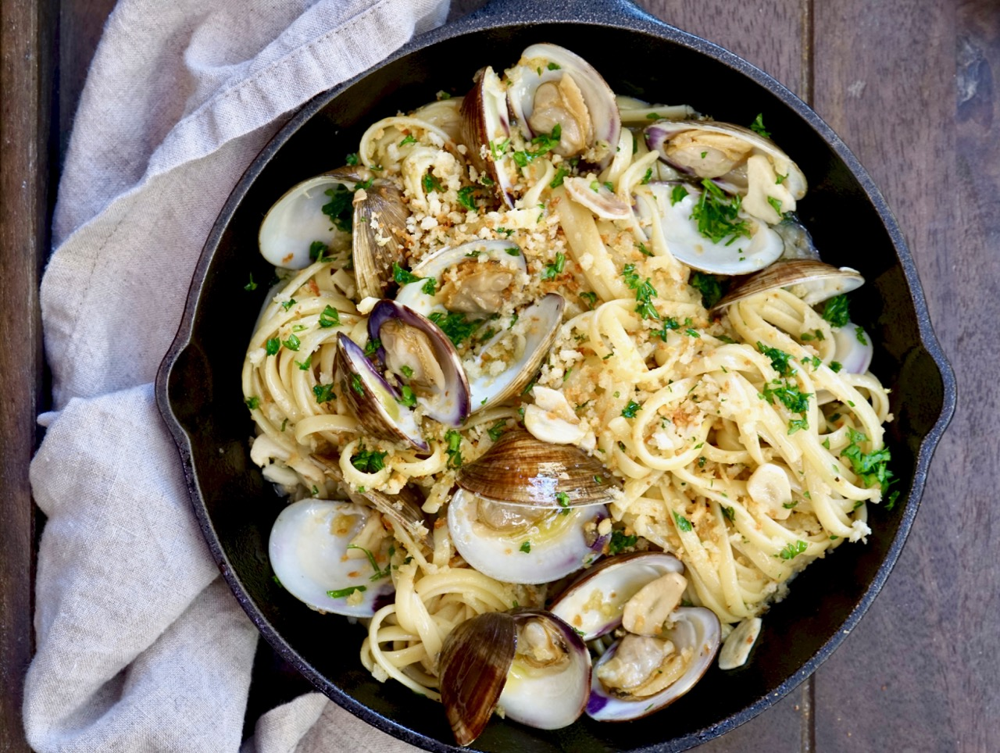

Linguine With Clams
Home

Description
A classic Italian summer dish: linguine with clams.
Ingredients
- 3 pounds littleneck clams, scrubbed
- 8 garlic cloves, divided
- 2 tablespoons unsalted butter, divided
- 3/4 cup plain panko bread crumbs
- 1/4 cup, plus 2 tablespoons, Extra Virgin olive oil, plus more for drizzling
- 1 teaspoon grated lemon zest
- 3 oil-packed anchovy fillets
- 1/2 teaspoon red pepper flakes (optional)
- 1/2 cup dry white wine
- 1/2 cup clam juice
- 12 ounces linguini
- 1/2 cup fresh parsley, finely chopped, divided